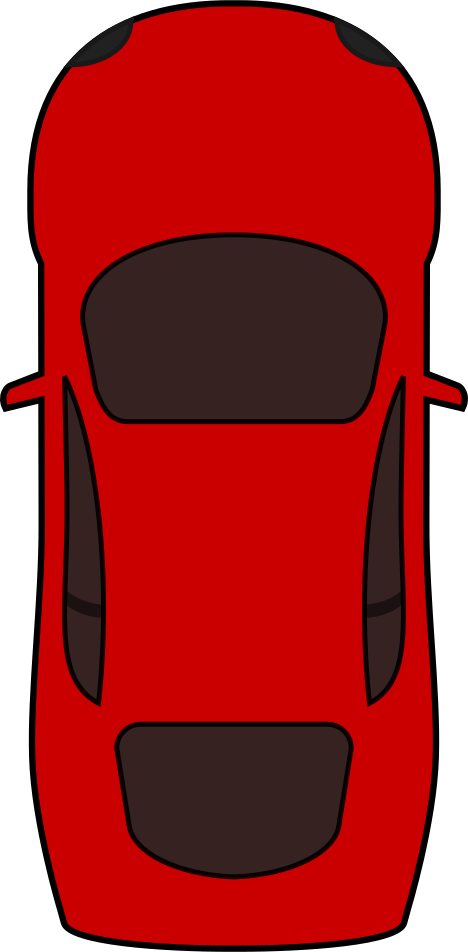
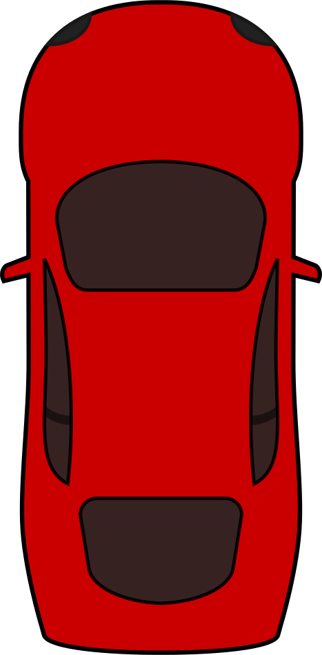

Informacje o grze
Witaj w naszej grze "Drive for time"! To ekscytująca gra, która sprawi, że poczujesz adrenalinę i pozwoli Ci w pełni wykorzystać swoje zdolności do szybkiego i precyzyjnego kierowania pojazdem. Twoim zadaniem jest zdobycie największej ilości punktów, omijając pojawiające się przeszkody. Gra składa się z trzech poziomów trudności, dzięki czemu możesz dostosować poziom trudności do swojego poziomu doświadczenia.
Podczas gry będziesz miał również okazję zbierać "nitro", które dodaje Ci punkty i przyspiesza prędkość Twojego pojazdu na 5 sekund. Dodatkowo, w trakcie jazdy, będziesz miał możliwość zmiany wzoru przeszkód, ponieważ w grze dostępne są cztery różne wzory. Będziesz miał także możliwość zebrać "farbę" o różnych kolorach, która zmieni kolor Twojego pojazdu i doda Ci 1 punkt do wyniku.
Ciesz się szybką i emocjonującą grą, korzystając z różnych opcji personalizacji, jakie oferuje nasza gra "Drive for time". Wybierz swój poziom trudności, wzór przeszkód, a także kolor swojego pojazdu i spróbuj przejechać jak największą odległość, zbierając jak najwięcej punktów. Zapraszamy do zabawy!
Nasza gra jest dostępna tylko na komputer!
Elementy gry:
 

Pojazd-może on zmieniać kolory podczas gry

Farba-zmienia kolor pojazdu i dodaje 1 punkt
Nitro - przyśpieszenie pojazdu i dodatkowe punkty

Przeszkoda - podczaz zderzenia z nią gra się kończy